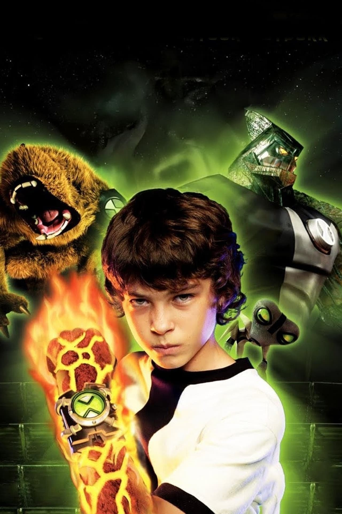
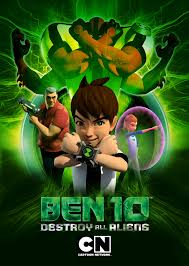
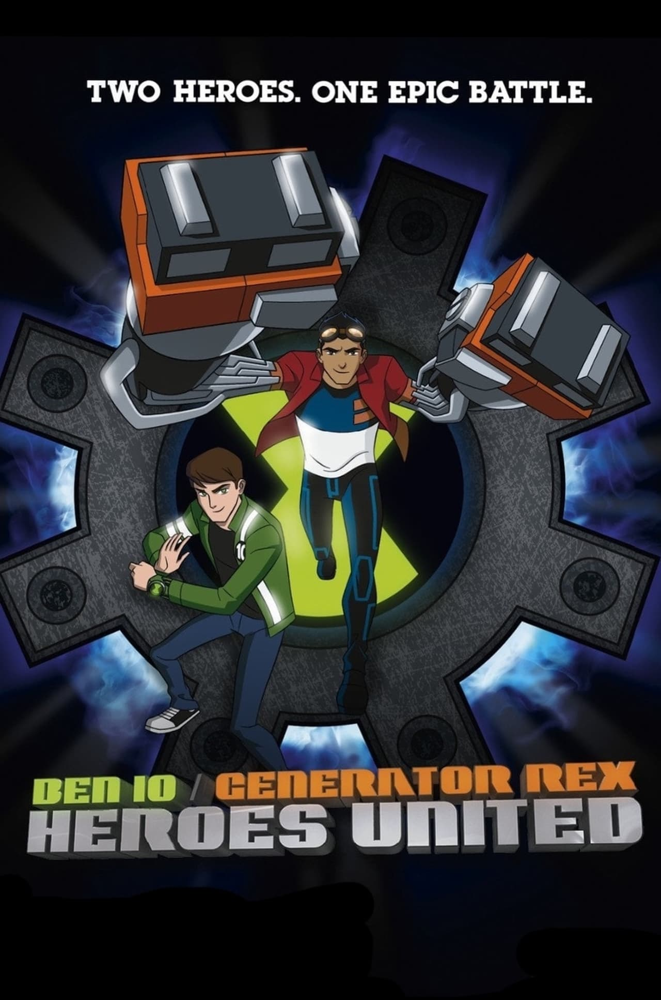
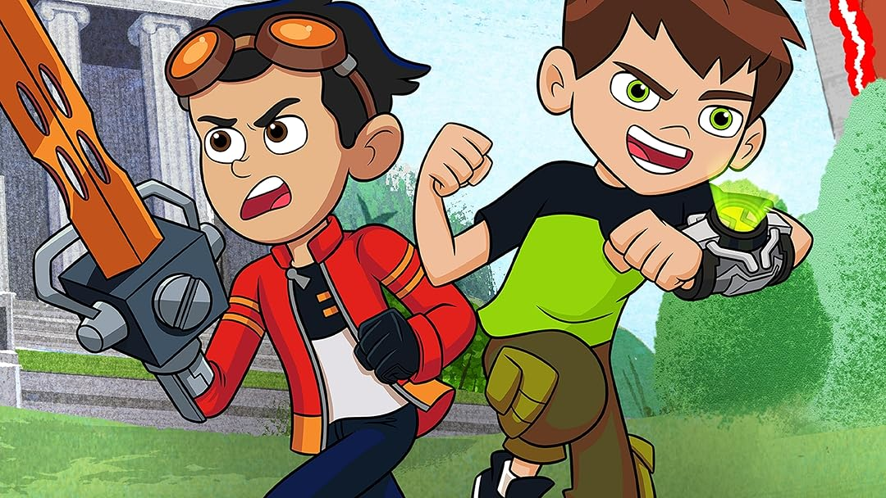
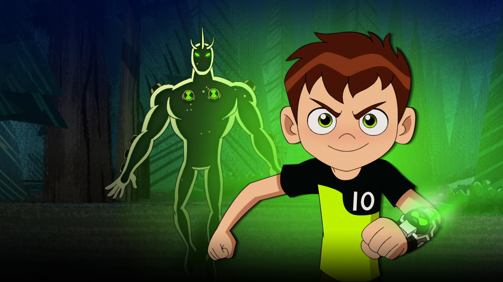

BEN 10: EL SECRETO DEL OMNITRIX

Ben 10: Carrera contra el Tiempo

Ben 10: Destrucción Alienígena

Ben 10: Contra el Universo

Ben 10.010

Ben 10: Invasión Alienígena

Ben 10: Héroes Unidos

Ben Gen 10
